projects
#1 matchbox sketch
First school assignment, draw 3 sketches of luciferboxes. Each time in a different composition
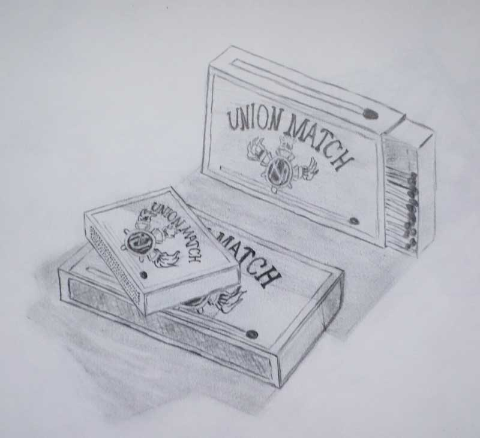 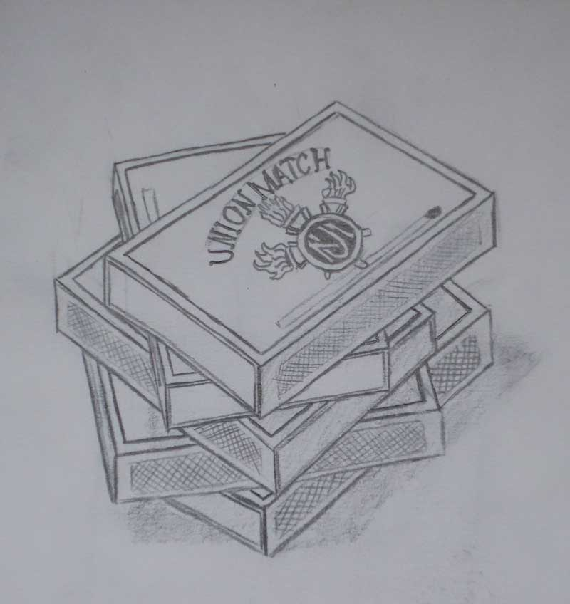 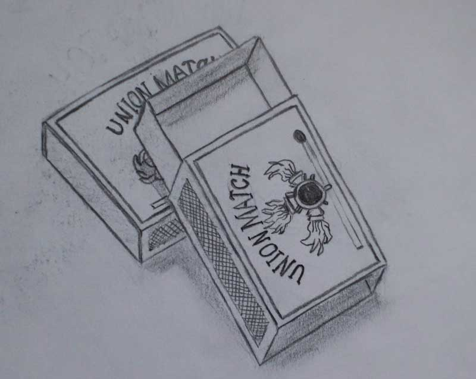#2 interior sketch
Sketch of a interior with windows on the left, a door on the right, a round ceiling hole and a tiled floor.
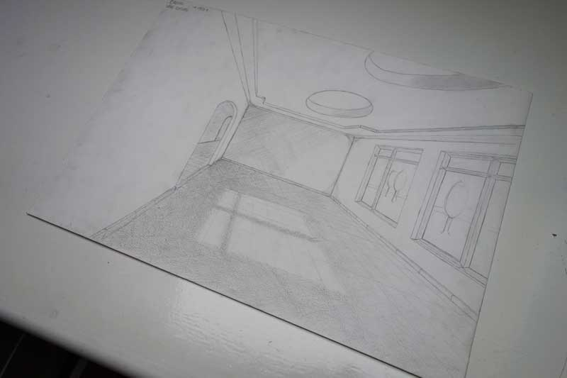 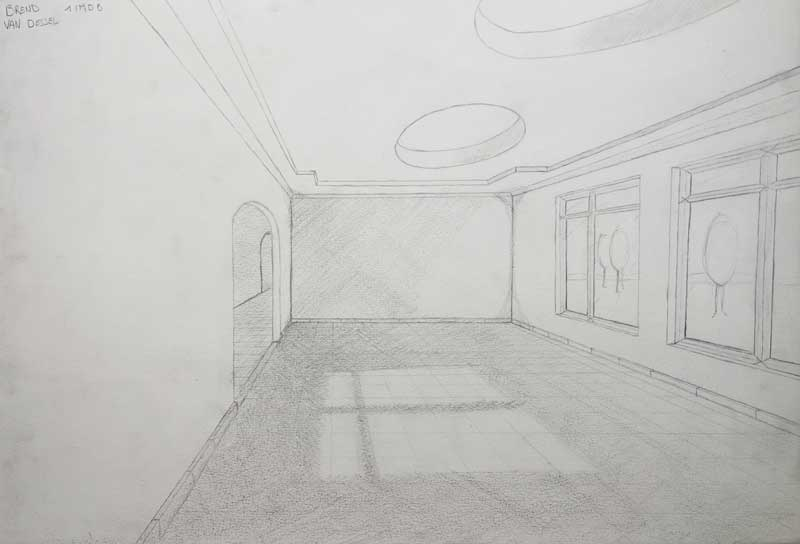#3 vector selfie
First time illustrator drawing of myself. Getting to know the famous pen tool.
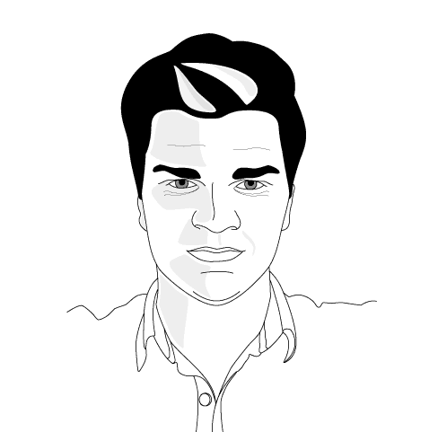 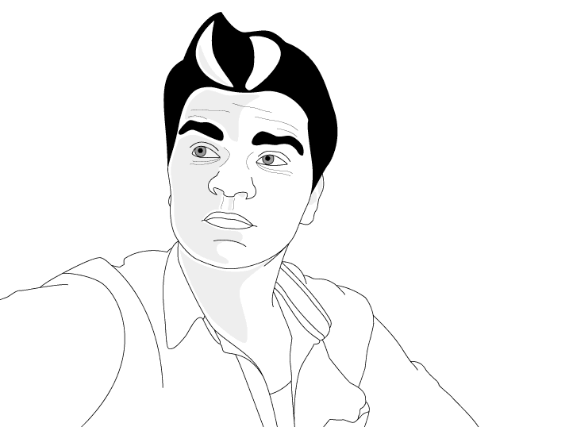#4 logo design
Logo design for myself. first real creative achievement in my student life as a multimedia designer.
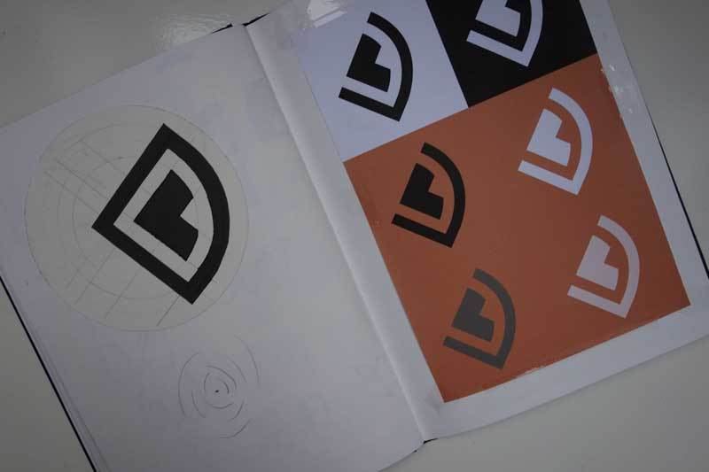#5 negative space
The hardest assignment yet in my school life. A frying pan and a chefs hat, disguised as bacon and eggs.
#6 typography
God is the ultimate designer. In this project i tried to give the quote "God is a designer" a nice typography
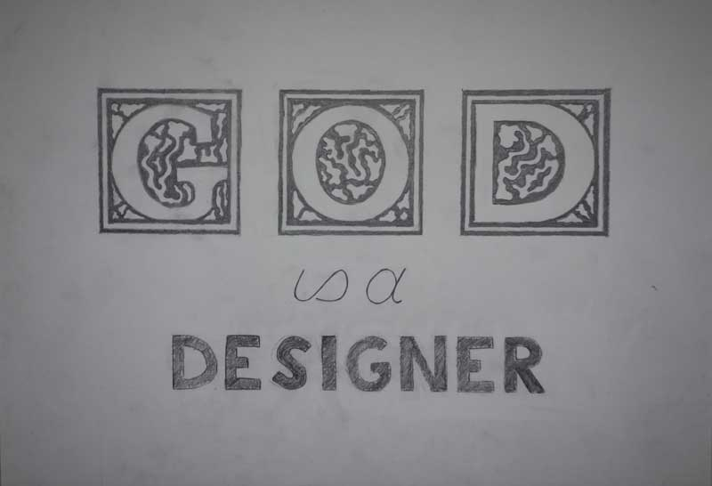
#7 wallpaper
For some people is januari an end of a good year (2014), for others is it the start for a new journey (2015).
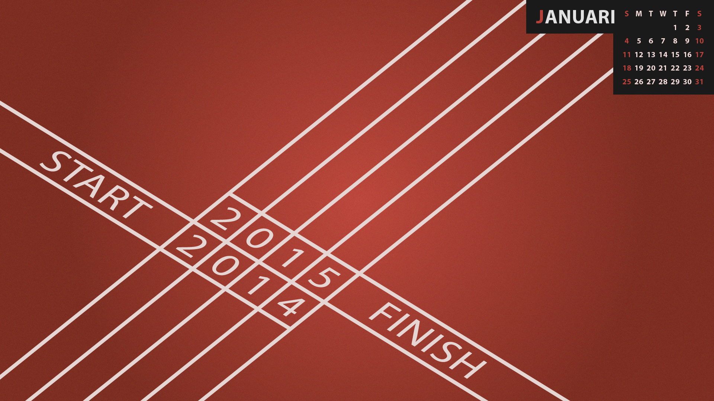#8 long play album art
The most fun assignment yet, redesigning a long play album. I chose the legendary punk rock album Smash from The Offspring.
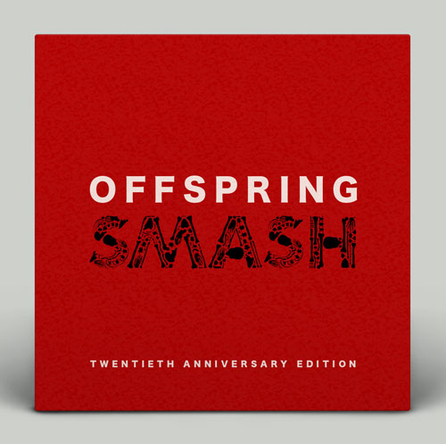 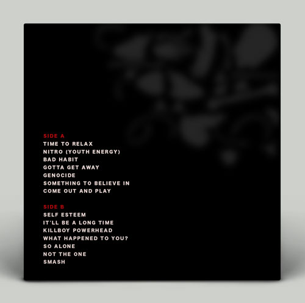 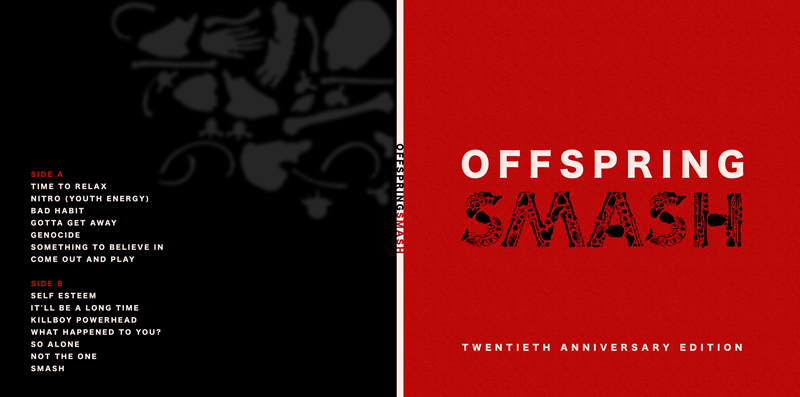#9 photography
First photo, texture and structure. Second, organic and geometric. Last we have, old vs new
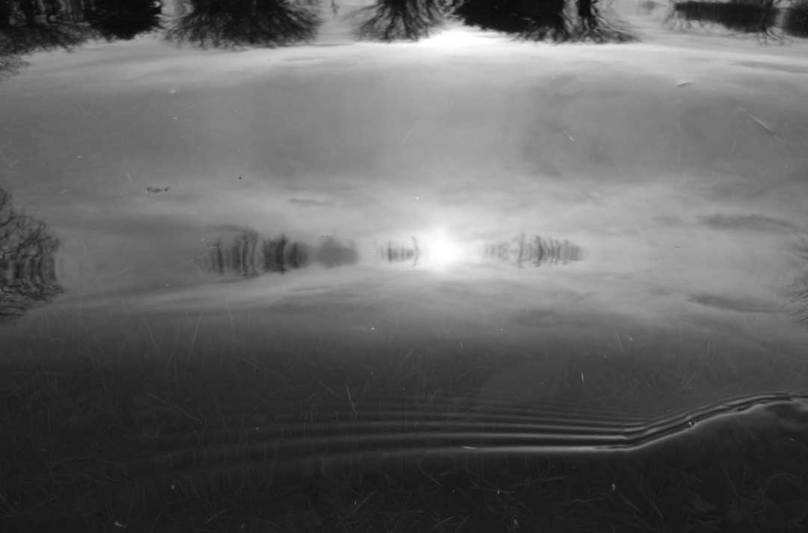 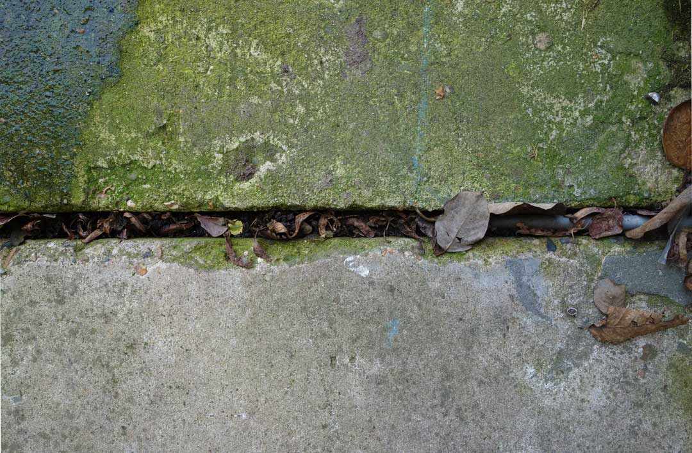